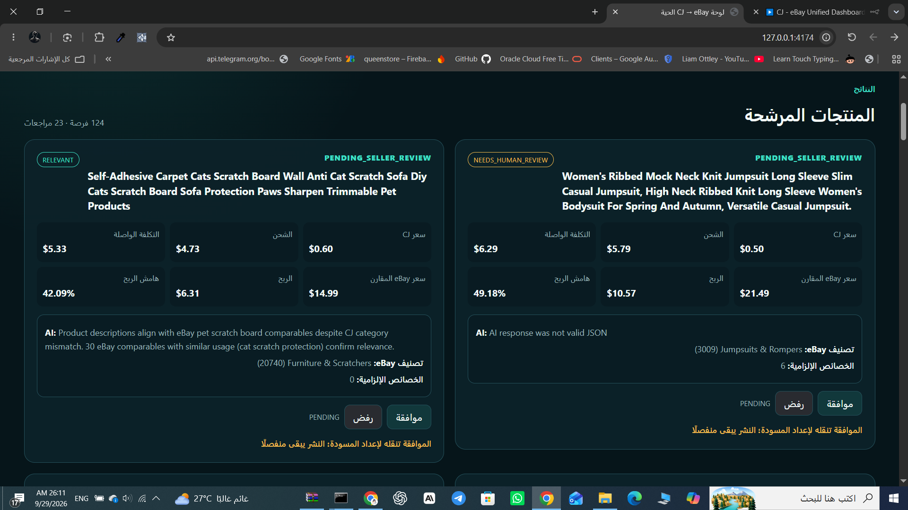
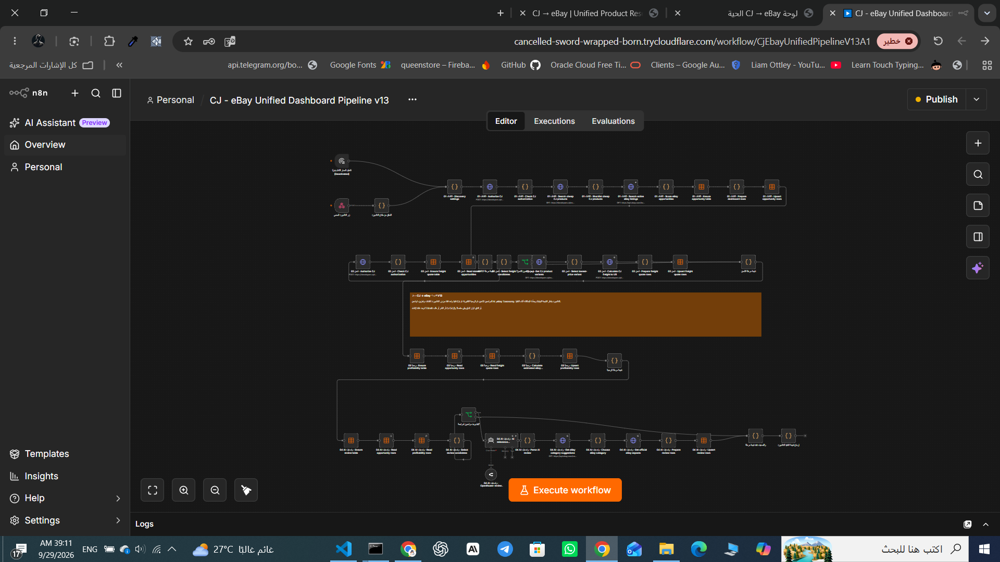

ينسّق مسارًا واحدًا من الداشبورد عبر Webhook محمي.
مسار موحّد يجمع اكتشاف منتجات CJ، فحص الشحن، تقدير الربحية، مراجعة AI وتصنيف eBay الرسمي.
ينسّق مسارًا واحدًا من الداشبورد عبر Webhook محمي.
اكتشاف المنتجات، جلب المتغيرات وحساب الشحن إلى US.
بحث القوائم النشطة ثم Category Suggestions وOfficial Aspects.
يقارن ملاءمة منتج CJ مع دليل eBay ولا يوافق على النشر.
تحفظ الفرص والشحن والربحية ونتائج المراجعة.
نقطة تشغيل محلية وعرض للنتائج وحالة المراجعة.
كل مرحلة تسلّم المرحلة التالية بيانات مخزنة وقابلة للمراجعة، مع تخطي المرحلة عند عدم وجود مرشحين مؤهلين.
بيانات منتج CJ: الاسم، الفئة، السعر، المخزون والصورة.
قوائم eBay النشطة والمقارنات السعرية ذات الصلة.
Variant من CJ وخيارات الشحن إلى الولايات المتحدة.
السعر الوسيط على eBay + التكلفة الواصلة لتقدير الربحية.
قرار البائع النهائي محفوظ كـ APPROVE / REJECT / PENDING.
فرص بحث + Freight Quote + تقدير ربحية + AI relevance + eBay Category + Required Aspects + حالة مراجعة البائع.
النتائج فرص للمراجعة وليست Listings منشورة.لا يحتوي ملف V13 على سجل Run ثابت يثبت عدد الفرص الفعلي أو مدة آخر تنفيذ؛ لذلك لم تُخترع أرقام تشغيل.

Dashboard
n8n Workflowالنظام يجمع الدليل السعري، الشحن، الربحية، مراجعة AI وتصنيف eBay في مسار واحد، مع إبقاء قرار النشر والشراء والدفع بيد المستخدم.